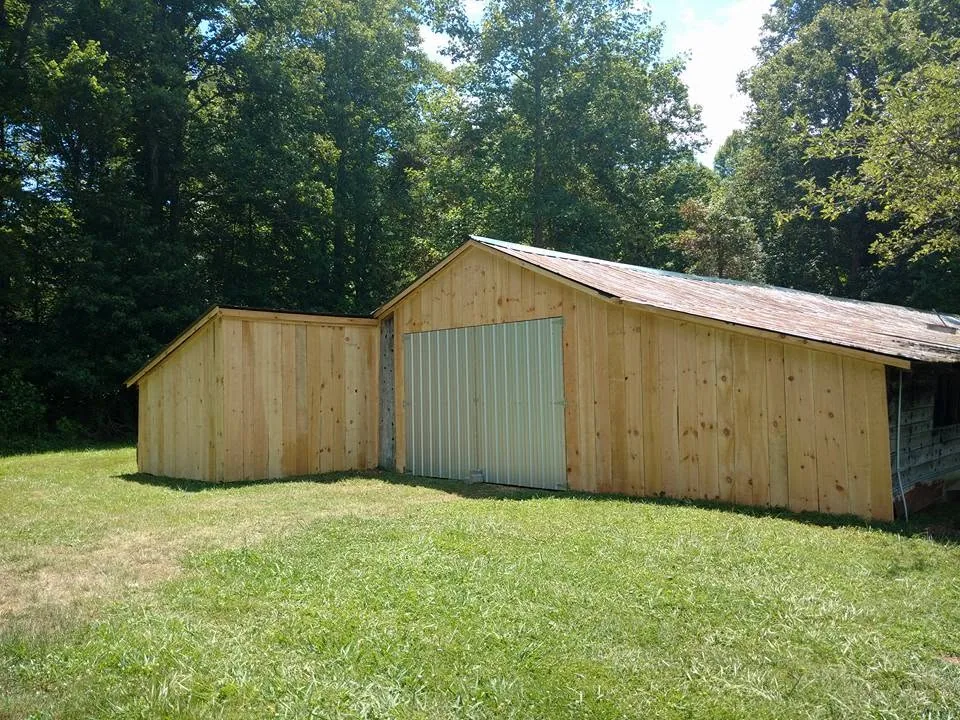
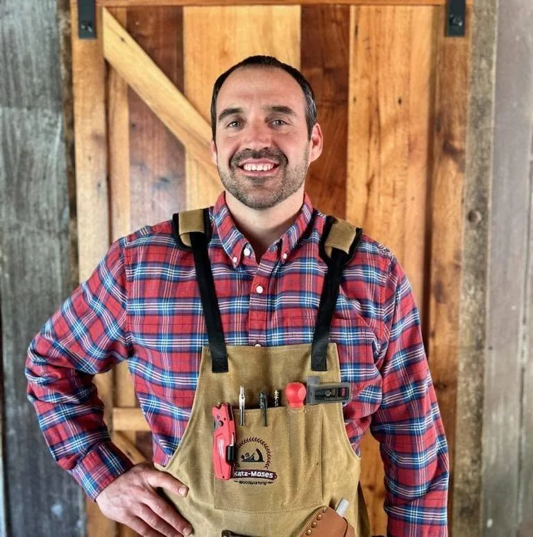

About Savard Construction


Cosby, TN
Practical Work for East Tennessee Properties
Savard Construction is a locally owned construction and maintenance company based in Cosby, Tennessee.
We work with homeowners, property owners, cabins, businesses, and other customers on remodeling, decks, porches, repairs, carpentry, woodworking, and general construction projects.
Customers choose Savard Construction for straightforward communication, dependable scheduling, careful workmanship, and attention to the details of the project.
Construction & Maintenance
Work shaped around the needs of the property and the customer.
Woodworking & Sawmill
Rough-sawn lumber, jointing, and planing through the woodshop.
Serving East Tennessee
Based in Cosby, Savard Construction serves homeowners and property owners throughout East Tennessee.
Service areas include Cosby, Newport, Sevierville, Gatlinburg, Pigeon Forge, Dandridge, White Pine, Kodak, Morristown, Knoxville, and surrounding East Tennessee communities.